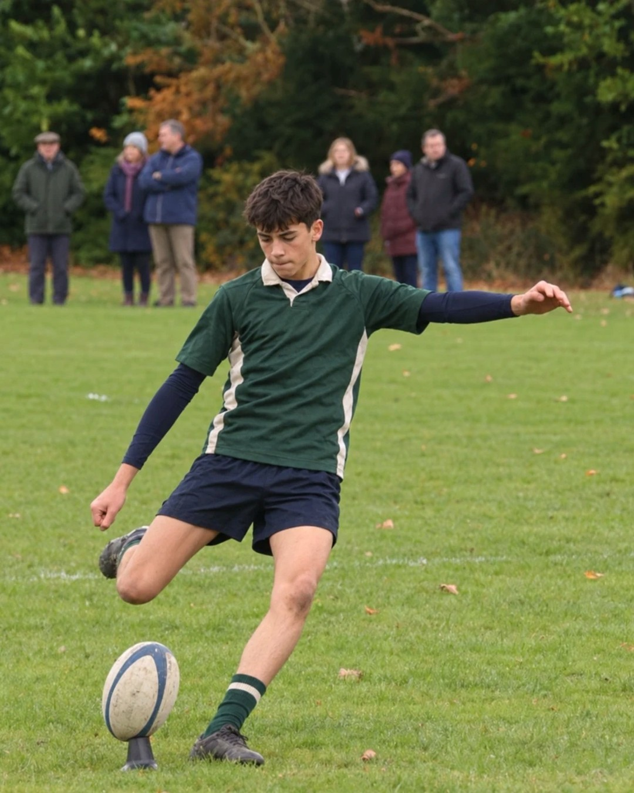
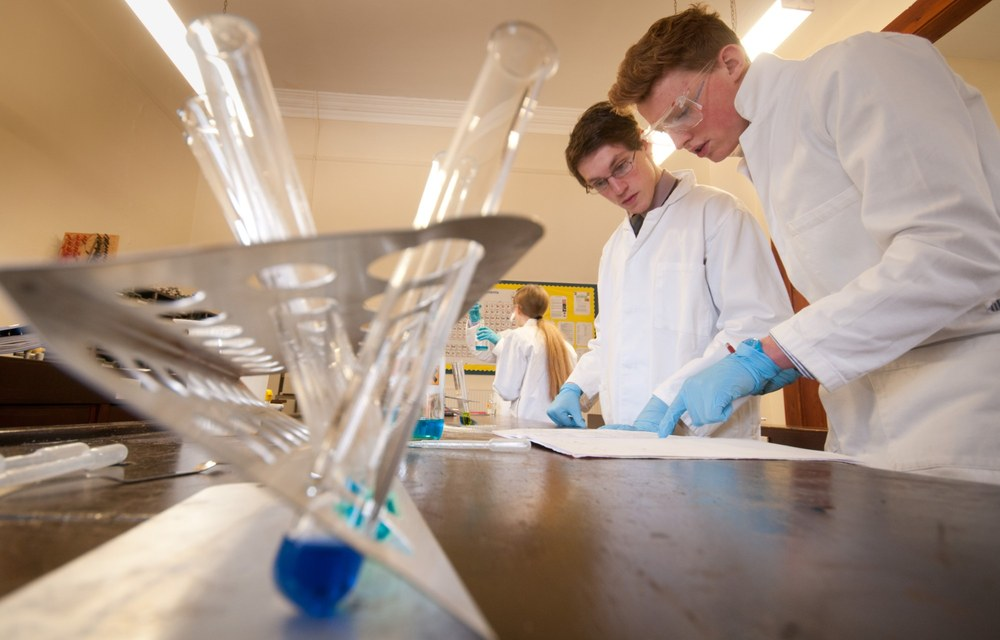
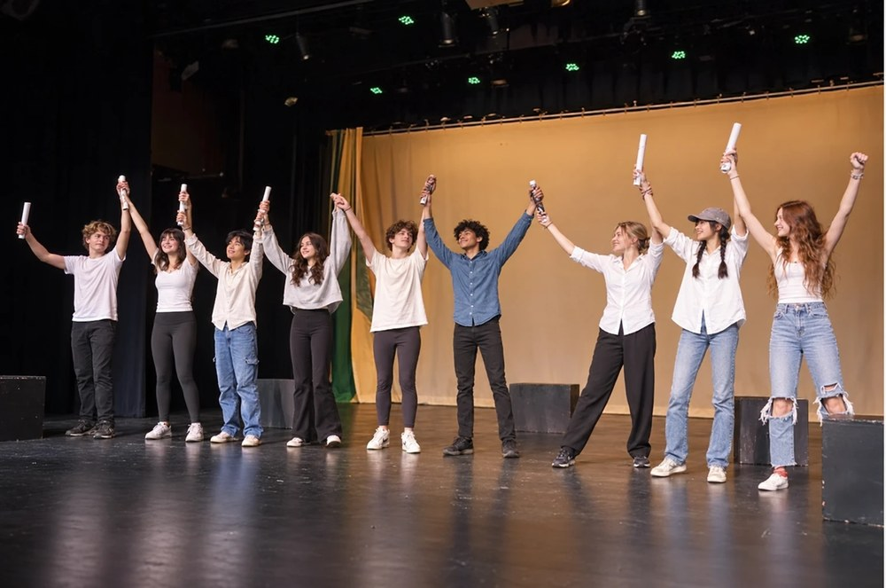

Estudiar en el extranjero, con un colegio que encaje
- Reino Unido
- Irlanda
- Estados Unidos
- Canadá
Buscamos con vosotros el colegio adecuado para vuestro hijo y os acompañamos en cada paso, de la primera conversación a su llegada.
Destinos
Cuatro destinos, un colegio que encaje
No hace falta tener decidido el país.

Reino Unido
Tradición académica y una vida escolar completa.
Internado
Irlanda
Aprender inglés compartiendo la vida local.
Internado o familia anfitrionaEstados Unidos
Opciones bajo consulta.
Canadá
Opciones bajo consulta.




Cómo trabajamos
Un proceso claro, paso a paso
- Paso 1Primera orientaciónHablamos de su perfil y de lo que os importa.
- Paso 2Propuesta de servicioSabéis qué incluye antes de decidir.
- Paso 3Selección y admisiónColegios que encajan, y su admisión coordinada.
- Paso 4Preparación y acompañamientoOs acompañamos hasta la llegada.
Comparar
Reino Unido e Irlanda, de un vistazo
La admisión, las fechas y las plazas dependen de cada centro.
- AlojamientoReino UnidoInternadoIrlandaInternado o familia anfitriona
- DuraciónReino UnidoCurso completo; trimestres en algunos colegiosIrlandaCurso completo o trimestres
- Tipo de colegioReino UnidoIndependiente y mixtoIrlandaInternado o de día; casi todos mixtos
- AdmisiónReino UnidoInformes, entrevista o pruebasIrlandaSe revisa con cada colegio
- Vida escolarReino UnidoActividades de tarde y fin de semanaIrlandaDeporte de equipo, música o cultura
Preguntas
Lo que suelen preguntarnos las familias
¿A partir de qué edad puede ir?
Para estudiar en el extranjero, de 9 a 18 años. El curso de entrada depende de cada colegio y lo confirmamos con vosotros.
¿Cuánto cuesta?
Depende del destino, la duración y el colegio. Os lo detallamos en la propuesta, con lo que incluye y lo que se abona aparte.
¿Cuándo hay que empezar?
Recomendamos empezar con un curso escolar de antelación, porque las plazas pueden agotarse. Si consultáis más tarde, revisamos las plazas disponibles.
¿Se puede ir solo un trimestre?
Sí. En el Reino Unido, algunos colegios admiten uno o dos trimestres, con plazas limitadas; otros solo el curso completo. En Irlanda gestionamos cursos completos y estancias por trimestres. La disponibilidad se confirma con el colegio elegido.
¿Y si no sabemos qué destino o duración elegir?
No hace falta tenerlo decidido. Contadnos la edad, el curso y lo que buscáis, y os orientamos sin compromiso.
¿Pedir orientación nos compromete a algo?
No. Es una conversación para que tengáis la información. La decisión es vuestra.